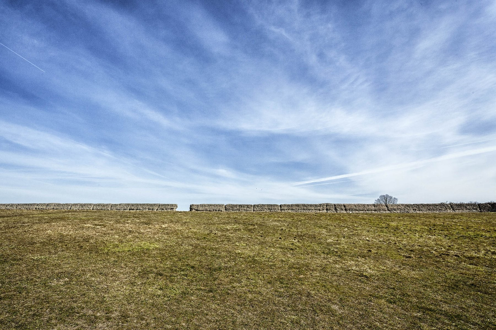
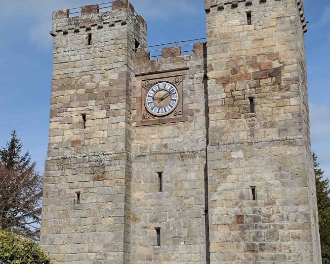
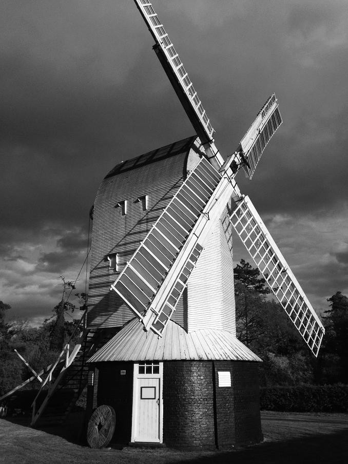

The Norfolk Archaeological Trust
Burgh Castle Roman Fort
Discover the story of one of Britain’s best-preserved Roman coastal forts, set within a remarkable open landscape.
Open in App →Past Paths Experiences
Explore carefully researched digital audio experiences created with heritage partners, from Roman forts and border towers to restored local landmarks.

The Norfolk Archaeological Trust
Discover the story of one of Britain’s best-preserved Roman coastal forts, set within a remarkable open landscape.
Open in App →
Preston Tower
Step into the story of a fortified tower and the turbulent borderland world that shaped it.
Open in App →
Lowfield Heath Windmill Trust
Explore the history, setting and restoration of a distinctive local landmark.
Open in App →